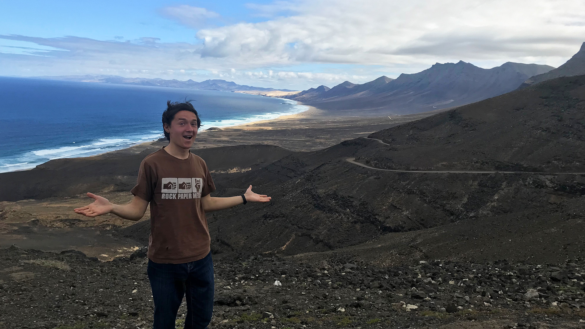
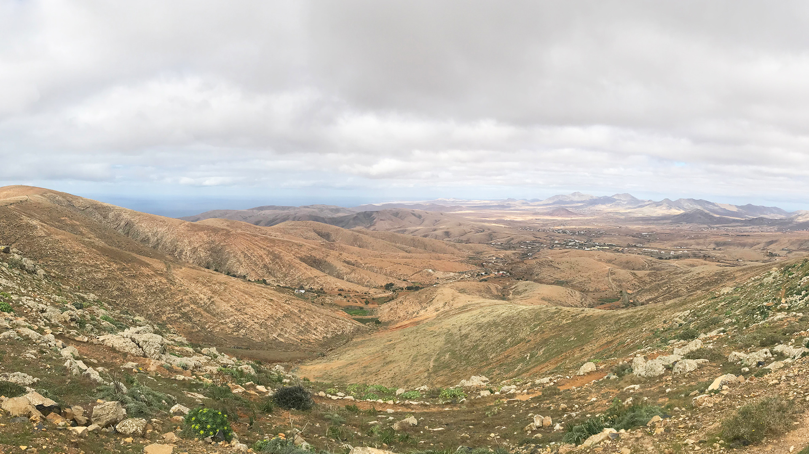
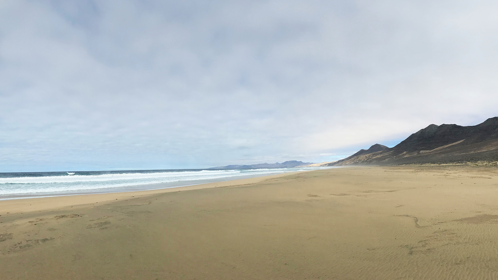

Канарські острови
Кана́рські острови́ (лат. Canis — «собака» ) — група островів вулканічного походження в Атлантичному океані, розташованих поблизу північно-західного узбережжя Африки, за 100 км від кордону між Марокко і Західною Сахарою. Покровителька — Діва Марія Канделярійська.
Канарские острова, испанский архипелаг недалеко от северо-западного побережья Африки, – холмистые вулканические острова, известные своими пляжами с черным и белым песком. Над Тенерифе, самым большим островом, возвышается Тейде – активный вулкан, вершина которого иногда покрывается снегом. На ней находится обсерватория. Вулкан расположен на территории одноименного национального парка. В столице Канарских островов Санта-Крус-де-Тенерифе в преддверии Великого поста проводится масштабный карнавал.
Риболовецьке село Пуерто та Моган знаходиться в 40 хвилинах від аеропорту Лас Палмас. Тут є декілька ресторанів, магазинчиків і декілька супермаркетів з устаткуванням для яхт. Пуерто та Моган - улюблене місце відпочинку яхтсменів (у селищі є сучасний риболовецький-спортивний порт). Це місце ще називають "Канарською Венецією". Тут ви знайдете і відмінну клініку. Щодня звідси ходять автобуси в Лас Палмас і Пуерто Ріко.
Острови отримали свою назву від великих собак, які водилися на островах. Про це писав давньоримський учений Пліній Старший. Також, про це свідчать 2 собаки, зображені на гербі та прапорі. Прапор Канар — розміщені вертикально блакитно-жовті смуги. Жовтий, точніше канарковий, колір на прапорі символізує вільність птаха, родом із Канарських островів, відомого під назвою канарка.
Визначні місця островів — піраміди в Гуїмар та найвища вершина Іспанії — Тейде (3718 м), на острові Тенерифе. На острові Ла-Пальма є Обсерваторії Північної півкулі (1981; умови для спостереження винятково сприятливі — не потрібне штучне світло, бо не буває туманів).
У 1821 острови стають провінцією Іспанії зі столицею у Санта-Крус-де-Тенерифе. Це викликає незадоволення з боку Лас-Пальмас-де-Гран-Канарія, і згодом у 1840-і роки острови поділяють на дві провінції: Санта-Крус-де-Тенерифе і Лас-Пальмас. У 1982 році Канарські острови стають автономною областю Іспанії і в 1986 році вступають до Європейський Союз на особливих умовах. Незважаючи на віддаленість архіпелагу, жителі Канарських островів є повноцінними підданими іспанської корони.
Кана́рські острови́ (лат. Canis — «собака» ) — група островів вулканічного походження в Атлантичному океані, розташованих поблизу північно-західного узбережжя Африки, за 100 км від кордону між Марокко і Західною Сахарою. Покровителька — Діва Марія Канделярійська.
Канарские острова, испанский архипелаг недалеко от северо-западного побережья Африки, – холмистые вулканические острова, известные своими пляжами с черным и белым песком. Над Тенерифе, самым большим островом, возвышается Тейде – активный вулкан, вершина которого иногда покрывается снегом. На ней находится обсерватория. Вулкан расположен на территории одноименного национального парка. В столице Канарских островов Санта-Крус-де-Тенерифе в преддверии Великого поста проводится масштабный карнавал.
- 
- 
- 
Риболовецьке село Пуерто та Моган знаходиться в 40 хвилинах від аеропорту Лас Палмас. Тут є декілька ресторанів, магазинчиків і декілька супермаркетів з устаткуванням для яхт. Пуерто та Моган - улюблене місце відпочинку яхтсменів (у селищі є сучасний риболовецький-спортивний порт). Це місце ще називають "Канарською Венецією". Тут ви знайдете і відмінну клініку. Щодня звідси ходять автобуси в Лас Палмас і Пуерто Ріко.
Острови отримали свою назву від великих собак, які водилися на островах. Про це писав давньоримський учений Пліній Старший. Також, про це свідчать 2 собаки, зображені на гербі та прапорі. Прапор Канар — розміщені вертикально блакитно-жовті смуги. Жовтий, точніше канарковий, колір на прапорі символізує вільність птаха, родом із Канарських островів, відомого під назвою канарка.